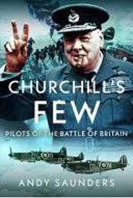

Staff Picks

The Killer Angels
The Killer Angels by Michael Shaara is a vivid, deeply human account of the Battle of Gettysburg that reads less like traditional military history and more like a novel about choice, character, and consequence.

Churchill’s Few: Pilots of the Battle of Britain
Churchill’s Few: Pilots of the Battle of Britain by Andy Saunders is a richly illustrated and highly accessible tribute to the men of the Royal Air Force and other aircrew who fought in the pivotal Battle of Britain during the summer of 1940.